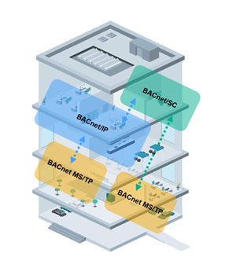

使用 BACnet/SC 设计现有项目升级/extensions
现有的楼宇自动化系统可以逐步升级到 BACnet/SC. 由于 BACnet/SC 保持了 BACnet 兼容性、互操作性和系统可扩展性的优点，使用 BACnet 路由功能可以轻松完成现有 BACnet 系统的逐步扩展或升级。使用分而治之的原则，将 BACnet/SC 引入现有 BACnet 系统，首先对建筑物进行逻辑分区，并将项目构建为不同数据链路类型的各个 BACnet 逻辑网络。然后可以从一个小型 BACnet/SC 逻辑网络“岛”开始，该“岛”使用 PXC4/5/7 自动化站中提供的 BACnet 路由连接到 BACnet/IP 和 BACnet MS/TP 网络。随着这些网络上的设备过时并且替代产品可用，应该制定一个计划来升级剩余的不安全网络。
